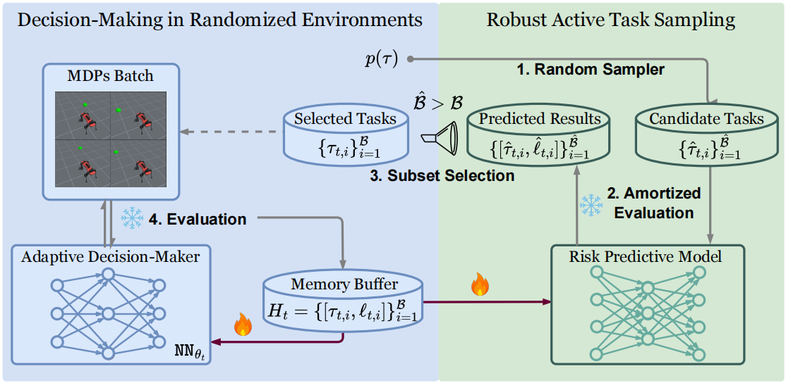
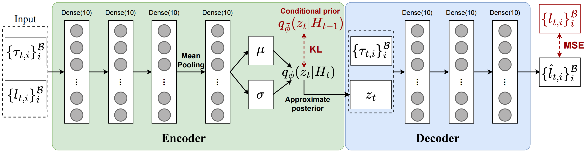
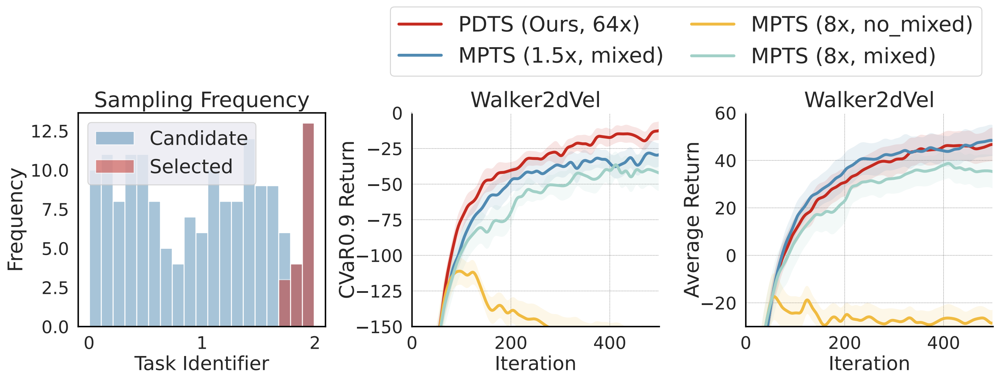

Robust Active Task Sampling (RATS)
Efficient and Robust Adaptation.
An existing challenge in DRL is effectively adapting policy to unseen but similar scenarios without learning from scratch.
Simultaneously, adaptation robustness to worst-case scenarios is critical, as real-world failures can have serious consequences, such as robot damage or autonomous driving accidents.
Expensive Policy Evaluation.
Traditional task robust optimization methods typically require exact task evaluation to prioritize challenging tasks
to optimize demands intensive and expensive policy evaluation in massive environments over iteration.
For example, $\text{CVaR}_\alpha$ selects $(1-\alpha)$ proportional worst tasks after exact evaluation to optimize.
Robust Active Task Sampling (RATS).
We specify RATS paradigm, which slightly differs from traditional active learning purposes.
RATS is mainly incorporated into risk-averse learning with traits:
(i) active inference towards task difficulties with limited cost;
(ii) acquisition rules to select the subset from the pseudo task set to optimize for robustness.

General Framework of RATS in Risk-Averse Decision-Making.
The pipeline involves amortized evaluation of task difficulties,
robust subset selection,
policy optimization in the MDP batch,
and risk predictive models' update. [fire: updates; snow: evalluation].
Traditional methods rely on exact evaluation rather than amortized evaluation, resulting in substantial computational cost.
Model Predictive Task Sampling (MPTS, wang2025beyond).
MPTS is a method of RATS.
It is the first work to observe that task risk $\ell$ is predictable and to design a risk prediction model $p(\ell\vert\bm\tau,H_{1:t};\bm\theta_{t})$ to surrogate expensive evaluation.
MPTS treats the optimization history as sequence generation and involves latent variables $\bm z_t$ to summarize batches of adaptation risk over iterations, which leads to:
\[
\begin{equation}
p(\mathcal{\bm L}_{0:T}^{\mathcal{B}},\bm z_{0:T}\vert\bm\theta_{0:T})
=p(\bm z_{0})\prod_{t=0}^{T}p(\mathcal{\bm L}^{\mathcal{B}}_{t}\vert\bm z_{t},\bm\theta_{t})\prod_{t=0}^{T-1}p(\bm z_{t+1}\vert\bm z_{t}),
\end{equation}
\]
with the evaluation risk batch $\mathcal{\bm L}^{\mathcal{B}}_{t}=\{(\bm\tau_{t,i},\ell_{t,i})\}_{i=1}^{\mathcal{B}}$.
With the Bayes rule and the streaming variational inference w.r.t. the Equation (1), it obtains the approximate evidence lower bound of the risk learner to maximize in each batch:
\[
\begin{equation}\max_{\bm\psi\in\bm\Psi,\bm\phi\in\bm\Phi} \mathcal{G}_{\text{ELBO}}(\bm\psi,\bm\phi)
:= \mathbb{E}_{q_{\bm\phi}(\bm z_{t}\vert H_{t})}\left[\sum_{i=1}^{\mathcal{B}}\ln p_{\bm\psi}(\ell_{t,i}\vert\bm\tau_{t,i},\bm z_{t})\right] \\
-\beta D_{KL}\Big[q_{\bm\phi}(\bm z_{t}\vert H_{t})\parallel q_{\bar{\bm\phi}}(\bm z_{t}\vert H_{t-1})\Big],
\end{equation}
\]
with $\bar{\bm\phi}$ the fixed conditioned prior from the last update and $\beta\in\mathbb{R}^{+}$ the penalty weight.
Then the amortized evaluation of adaptation performance is approximated as $p(\ell\vert\bm\tau,H_{1:t};\bm\theta_{t})\approx\mathbb{E}_{q_{\bm\phi}(\bm z_{t}\vert H_{t})}\left[p_{\bm\psi}(\ell\vert\bm\tau,\bm z_{t};\bm\theta_{t})\right]$ through Monte Carlo estimates.

Illustration of the neural architecture of the risk predictive model in MPTS.
The risk predictive model follows an encoder-decoder structure which encodes the batch ${[\tau_{t,i},\ell_{t,i}]}$
into a latent variable $z$ and then decodes it into predicted adaptation risks $\hat{\ell}_{t,i}$.
We reuse it in PDTS.
Posterior and Diversity Synergized Task Sampling (PDTS)
1. Enable Robust Active Task Sampling with i-MABs.
Task Robust Episodic Learning as a MDP.
To provide a versatile theoretical tool to analyze RATS,
we specify task robust episodic learning as a secret MDP $\mathcal{M}=\langle\mathbf{S},\mathbf{A},\mathbf{P},\mathbf{R}\rangle$:
State Space: The feasible machine learner's parameter, such as Meta-RL policies, i.e., $\mathbf{S}=\{\bm\theta\in\bm\Theta\}$;
Action Space: A collection of task subsets with cardinality constraints $\mathbf{A}_{t}=\{\mathcal{T}_{t}^{\mathcal{B}}\subseteq\mathcal{T}^{\hat{\mathcal{B}}}_{t}\ \text{with} \ |\mathcal{T}^{\mathcal{B}}_{t}|=\mathcal{B}\}$ in RATS or $\text{CVaR}_{\alpha}$ methods;
Transition: $p(\bm\theta_{t+1}\vert\bm\theta_{t},\mathcal{T}_{t+1}^{\mathcal{B}})\in\mathbf{P}$ conditioned on $\bm\theta_{t}$ and the action $\mathcal{T}_{t+1}^{\mathcal{B}}$ with the transited state (after-adaptation) $\bm\theta_{t+1}$;
Reward: Adaptation robustness improvement after state transitions.
With $\text{CVaR}_{\alpha}$ as a risk-averse measure, $R(\bm\theta_{t},\mathcal{T}_{t+1}^{\mathcal{B}}):=\text{CVaR}_{\alpha}(\bm\theta_{t})-\text{CVaR}_{\alpha}(\bm\theta_{t+1})$.
From i-MABs to MPTS's Robustness Concept.
We further simplify $\mathcal{M}$ into an infinite many-armed bandit (MAB) to enable an online search of the optimal subset.
The arm corresponds to a feasible subset $\mathcal{T}^{\mathcal{B}}_{t+1}\in\mathbf{A}_{t+1}$.
Our i-MAB is a theoretical model for inducing RATS methods, and MPTS can be viewed as a special case:
Proposition 3.2 (MPTS as a UCB-guided Solution to i-MABs)
Executing MPTS pipeline is equivalent to approximately solving $\mathcal{M}$ with the i-MAB under the UCB principle.
2. Refined Diversity Regularized Acquisition Function.
Benefits of Enlarging $\hat{\mathcal{B}}$ in Subset Selection.
(i) it encourages exploration in the task space with more candidate subsets at no actual interaction cost;
(ii) under high-risk prioritization rule, the optimization pipeline in RATS approximately executes $\text{CVaR}_{1-\frac{\mathcal{B}}{\hat{\mathcal{B}}}}$ in each iteration, i.e., worst-case optimization with $\hat{\mathcal{B}}\to\infty$.
Sealed Exploration Potential in MPTS.
Unfortunately, MPTS might encounter severe performance collapses with greater $\hat{\mathcal{B}}$ when $\hat{\mathcal{B}}=8\mathcal{B}$ without a remedy.
Through both empirical and theoretical analysis, we find that it can be attributed to the selected subset's concentration in a narrow range.

MPTS's Performance Collapse with Greater $\hat{\mathcal{B}}$.
We report the performance collapses of MPTS on Walker2dVel in the case $\hat{\mathcal{B}}=8\mathcal{B}$. The task sampling frequency reveals the presence of the concentration issue.
Proposition 3.3 (Concentration Issue in Average Top-$\mathcal{B}$ Selection)
Let $f(\bm{\tau}): \mathbb{R}^d\to\mathbb{R}$ be a unimodal and continuous function, where $d\in\mathbb{N}^+$ and $\bm{\tau}\in\mathbb{R}^d$, with a maximum value $f(\bm{\tau}^*)$ at $\bm{\tau}^*$.
We uniformly sample a set of points $ \mathcal{T}^{\hat{\mathcal{B}}} = \{\bm{\tau}_i\}_{i=1}^{\hat{\mathcal{B}}}$,
where $\bm{\tau_i}$ are i.i.d. with a probability $p_\epsilon$ of falling within a $\epsilon$-neighborhood of $\bm{\tau^*}$ as $|f(\bm{\tau}) - f(\bm{\tau}^*)|\leq \epsilon$.
Following MPTS, we select the Top-$\mathcal{B}$ samples with the largest function values, i.e.,
$$\small
\mathcal{T}^{\mathcal{B}} = \text{Top-}\mathcal{B}(\mathcal{T}^{\hat{\mathcal{B}}}, f), \quad \hat{\mathcal{B}}, \mathcal{B} \in \mathbb{N}^+, \; \mathcal{B} \leq \hat{\mathcal{B}},$$
For any $\epsilon>0$ such that $p_\epsilon<\frac{\hat{\mathcal{B}}-\mathcal{B}+2}{\hat{\mathcal{B}}+1}$, the concentration probability
$$\small \mathbb{P}\left( |f(\bm{\tau}) - f(\bm{\tau}^*)| \leq \epsilon \ \vert\ \forall \bm{\tau} \in \mathcal{T}^{\mathcal{B}} \right)$$
increases with $\hat{\mathcal{B}}$ and converges to 1 with $\hat{\mathcal{B}} \to \infty$.
Diversity Regularization & Robustness Concept.
Our strategy is to encourage the coverage of the task space during subset selection.
Specifically, rather than selecting individual candidate tasks based on their acquisition score, we evaluate task batches based on both adaptation risk and task diversities in the subset:
\[
\begin{equation}
\max_{\mathcal{T}^{\mathcal{B}}\subseteq\mathcal{T}^{\hat{\mathcal{B}}}:|\mathcal{T}^{\mathcal{B}}|=\mathcal{B}}\mathcal{A}(\mathcal{T}^{\mathcal{B}})+\gamma\mathcal{S}\left[\{d(\bm\tau_i,\bm\tau_j)\}\right]
\end{equation}
\]
where $\mathcal{S}$ measures the diversity of the subset $\mathcal{T}^{\mathcal{B}}$ from identifiers' pairwise distances, e.g., $\sum_{i,j}||\bm\tau_i-\bm\tau_j||_2^2$.
Proposition 3.4 (Nearly Worst-Case Optimization with PDTS)
When $\hat{\mathcal{B}}$ grows large enough, optimizing the subset from the Equation (3) achieves nearly worst-case optimization.
3. Practical Sampling with Stochastic Optimism.
The UCB acquisition rule used in MPTS requires multiple stochastic forward passes for each task's evaluation, and computations grow with $\hat{\mathcal{B}}$.
It also demands calibration of exploration and exploitation weights in subset search.
To cut off unnecessary computations and retain the uncertainty optimism, we adopt the posterior sampling strategy as the acquisition principle for RATS.
The reward or action value is treated as a randomized function, and each arm's value, sampled from the posterior once, serves action selection, i.e., $\mathcal{A}_{\text{P}}(\mathcal{T}^{\mathcal{B}})=\sum_{i=1}^{\mathcal{B}}\hat{\ell}_{t+1,i}$
\[
\begin{equation}
\small{\text{One Forward Pass:}}\quad\bm z_{t}\sim q_{\bm\phi}(\bm z_{t}\vert H_{t})
\end{equation}
\]
\[
\begin{equation}
\hat{\ell}_{t+1,i}\sim p_{\bm\psi}(\ell\vert\hat{\bm\tau}_{i},\bm z_{t})\quad\forall i\in\{1,\dots,\hat{\mathcal{B}}\}
\end{equation}
\]
\[
\begin{equation}
\mathcal{T}_{t+1}^{\mathcal{B}*}=\arg\max_{\substack{\mathcal{T}^{\mathcal{B}}\subseteq\mathcal{T}^{\hat{\mathcal{B}}}\\|\mathcal{T}^{\mathcal{B}}|=\mathcal{B}}}\mathcal{A}_{\text{P}}(\mathcal{T}^{\mathcal{B}})+\gamma\mathcal{S}\left[\{d(\bm\tau_i,\bm\tau_j)\}\right]
\end{equation}
\]
Contributions
-
Our constructed i-MAB provides a versatile model to achieve RATS under various principles, including but not limited to MPTS and PDTS. The separate robustness concepts can be refined accordingly.
-
The designed diversity regularized acquisition function fixes the concentration issue, allows for exploration in a wider range of task sets (e.g., $\hat{\mathcal{B}}=64\mathcal{B}$), and secures nearly worst-case MDP robustness.
-
The resulting PDTS is easy-to-implement and benefits from stochastic optimism in posterior sampling for decision-making.
Citation
If you find our works helpful, please consider citing:
@misc{wang2025MPTS,
title={Model Predictive Task Sampling for Efficient and Robust Adaptation},
author={Qi Cheems Wang and Zehao Xiao and Yixiu Mao and Yun Qu and Jiayi Shen and Yiqin Lv and Xiangyang Ji},
year={2025},
eprint={2501.11039},
archivePrefix={arXiv},
primaryClass={cs.LG},
url={https://arxiv.org/abs/2501.11039},
}
@misc{qu2025fastrobusttasksampling,
title={Fast and Robust: Task Sampling with Posterior and Diversity Synergies for Adaptive Decision-Makers in Randomized Environments},
author={Yun Qu and Qi and Wang and Yixiu Mao and Yiqin Lv and Xiangyang Ji},
year={2025},
eprint={2504.19139},
archivePrefix={arXiv},
primaryClass={cs.LG},
url={https://arxiv.org/abs/2504.19139},
}